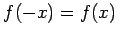

Meßfehlerverteilungsdichte
Spezielle Annahmen über die Eigenschaften der Meßfehler bedingen bestimmte Eigenschaften der Dichtefunktion der Fehlerverteilung:
- 1. Stetige Dichtefunktion:
- Da zufällige Meßfehler beliebige Werte aus einem bestimmten Intervall annehmen können, sind sie durch eine stetige Dichte f(x) zu beschreiben.
- 2. Gerade Dichtefunktion:
- Wenn Meßfehler mit gleichem Absolutbetrag, aber verschiedenem Vorzeichen gleichwahrscheinlich sind, muß die Dichtefunktion eine gerade Funktion sein:
.
- 3. Monoton fallende Dichtefunktion:
- Wenn Meßfehler mit großem Absolutbetrag weniger wahrscheinlich sind als Fehler mit kleinem Absolutbetrag, muß f(x) für x > 0 eine monoton fallende Funktion sein.
- 4. Endlicher Erwartungswert:
- Der Erwartungswert des Absolutbetrages des Fehlers muß eine endliche Größe sein, d.h., es muß gelten:
Durch Zugrundelegung unterschiedlicher Fehlereigenschaften kommt man zu verschiedenen Fehlerdichtefunktionen.